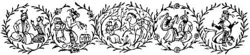
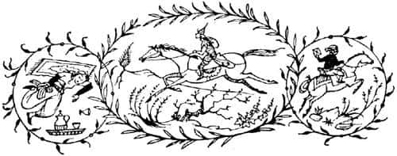

Tashbaan Kapılarında
“Adım” dedi kız hemen, “Aravis Tarkheena ve ben Kidrash Tarkaan’ın tek kızıyım. O ki Tanrı Tash’ın soyundan gelen Ardeeb Tisroc’un oğlu Ilsombreh Tisroc ve onun oğlu Kidrash Tarkaan’ın oğlu Rishti Tarkaan’ın oğludur. Babam, Calavar eyaletinin efendisidir ve Tisroc’un – ömrü uzun olsun – huzuruna ayakkabılarıyla çıkma hakkına sahiptir. Annem – Tanrı huzur içinde yatırsın – öldü ve babam başka bir kadınla evlendi. Erkek kardeşlerimden biri uzak batıda isyancılarla savaşırken şehit oldu ve diğeri de henüz çocuk. Sonra nedense babamın karısı, üvey annem benden nefret ediyordu ve ben babamın evinde yaşadığım sürece, günler onun için çekilmez oluyordu. Bu yüzden babamı, beni Ahoshta Tarkaan ile evlendirmesi için ikna etti. Şimdi, bu Ahoshta, son zamanlarda dalkavukluğu ve dalavereci danışmanların yardımıyla Tisroc’un – ömrü uzun olsun – gözüne girdi; birçok şehrin efendisi ve Tarkaan’ı yapıldı. Ahoshta’nın, şimdiki başvezir öldüğünde başvezir seçilme olasılığı çok yüksek olabilir ama o soylu biri değildir. Üstelik altmış yaşında, kambur ve yüzü de maymuna benziyor. Buna karşın babam, karısının iknasıyla Ahoshta’nın gücü ve zenginliğine kapılıp, haberciler göndererek evlenme teklifini iletti. Teklif kabul edildi ve Ahoshta, bu yaz ortasında benimle evleneceğini bildirdi.
Haberi duyduğumda gözlerim karardı ve kendimi yatağa atıp bütün gün ağladım. Ertesi gün kalkar kalkmaz, yüzümü yıkadım ve kısrağım Hwin’i eyerlettim. Kardeşimin Batı savaşlarında kullandığı keskin hançeri de yanıma alarak, tek başıma yola çıktım. Babamın evi gözden kaybolunca ve ıssız bir ormanda yeşil, açık bir alana geldiğimde, kısrağım Hwin’den indim. Hançeri çıkardım ve kalbime saplamak için uygun bir yer aradım. Göğsümü açtım, ölür ölmez beni kardeşimin yanına göndermeleri için bütün Tanrılara yalvardım. Sonra gözlerimi kapayıp dişlerimi sıktım ve hançeri kalbime sokmaya hazırlandım. Fakat o an kısrağım Hwin, insan gibi konuştu: ‘Ey sahibem’ dedi, ‘Asla canınıza kıymayın. Çünkü yaşarsanız şansınız açılabilir. Oysa bütün ölüler birbirine benzer.’”
Bu sırada Hwin “Bu kadar önemli bir şey söyleyebileceğim aklıma gelmezdi” diye mırıldandı.
Hikâyeden adamakıllı hoşlanan Bree ona, “Şşşş, madam şşşşş” dedi. “Hikâyeyi heybetli Calormen âdetlerine göre anlatıyor; Tisroc’un sarayındaki hiçbir masalcı bundan daha iyi anlatamaz. Lütfen devam edin Tarkheena.”
“Atımın insanoğlunun dilini konuştuğunu duyunca” diye devam etti Aravis, “ölüm korkusu aklımı başımdan aldığı için hayal görüyorum galiba, dedim kendi kendime. Ve içim utançla doldu, çünkü soyumuzda hiç kimse ölümden bir sinek ısırması kadar bile korkmaz. Bu nedenle, ikinci kez kendimi öldürmek istedim, fakat Hwin yanıma geldi, başını benimle hançerin arasına koydu ve bunun nedenini mükemmel bir şekilde açıkladı. Sonra da bir ananın kızını azarladığı gibi azarladı beni. O sırada merakım öylesine artmıştı ki kendimi öldürmeyi ve Ahoshta’yı unutup, ‘Ey benim kısrağım, insanoğulları gibi konuşmayı nasıl öğrendin?’ dedim. İşte o zaman Hwin, hepimizin bildiği şeyleri; Narnia’da konuşan hayvanların olduğunu ve kendinin küçük bir tayken oradan nasıl çalındığını anlattı. Narnia’nın ormanlarından, kalelerinden, nehirlerinden ve büyük gemilerinden söz etti. Sonunda ben ‘Tash, Azaroth ve Gecelerin Hanımı Zardeenah adına, Narnia ülkesinde yaşamayı çok arzuluyorum’ dedim. ‘Ey sahibem’ diye cevapladı kısrak, ‘Narnia’da olsaydın mutlu olurdun, çünkü o ülkede hiçbir kız kendi arzusunun aksine, evlendirilmeye zorlanmaz.’
Onunla uzun bir süre konuştuktan sonra umutlanmıştım ve kendimi öldürmediğime sevindim. Dahası, Hwin’le beraber kaçmaya karar verdik ve şöyle bir plan yaptık: Eve döndük ve ben en güzel giysilerimi giyip babamın önünde şarkı söyleyip dans ettim. Onun benim için yaptığı evlilik hazırlıklarından sevinç duyuyormuş gibi davrandım. Aynı zamanda ona dedim ki, ‘Ey babacığım ve gözlerimin nuru, üç günlüğüne hizmetçilerimden biriyle ormana gidip, âdet olduğu üzere, genç kızların Zardeenah’ın hizmetinden ayrılacakları ve kendilerini evliliğe hazırlayacakları zaman yaptıkları gibi, genç kızların ve Gecelerin Hanımı Zardeenah’a adak adayıp dilek tutmak için iznini ve emirlerini istiyorum.’ Ve babam, ‘Ey kızım ve gözlerimin nuru, dediğin yapılacak’ diye cevapladı.
Fakat babamın huzurundan ayrılınca, hemen onun kölelerinden en yaşlısına, beni bebekken dizlerinde sallayan ve beni havadan ve ışıktan daha fazla seven hizmetçisine gittim. Ona sırrımı saklaması için yemin ettirdim ve benim adıma bir mektup yazmasını istedim. Kararımı değiştirmem için yalvardı, ağladı fakat sonunda ‘Duymak, itaat etmektir’ dedi ve tüm isteklerimi yerine getirdi. Mektubu mühürleyip koynuma sakladım.”
“Peki, mektupta ne yazıyordu?” diye sordu Shasta.
“Sakin ol ufaklık” dedi Bree. “Hikâyeyi kesiyorsun. Zamanı geldiğinde mektuptan bahsedecek bize. Devam et Tarkheena.”
“Sonra benimle ormana gelip Zardeenah ayinlerine katılacak olan hizmetçiyi çağırdım. Onu biraz oyaladım, şarap ikram ettim ve sabahleyin beni erkenden uyandırmasını söyledim. Fakat içkisine öyle şeyler karıştırdım ki, bütün bir gece ve gündüz uyuyacağını biliyordum. Baba ocağımdaki herkes kendini uykuya teslim edince, kalktım. Odamda sakladığım, kardeşimin anısı olan zırhı kuşandım. Sahip olduğum tüm parayı ve bazı mücevherleri kuşağıma koydum. Yiyecek bir şeyler de aldım ve kısrağı kendi ellerimle eyerleyip, gece yarısından sonra uzaklaştım. Yönümü, babamın gittiğimi düşüneceği gibi ormana doğru değil, kuzeydoğuya, Tashbaan’a doğru ayarladım.”
“Babamın, söylediğim sözlere aldanarak, üç gün boyunca beni aramayacağını biliyordum. Ve dördüncü gün biz, Azim Balda şehrine ulaştık. Azim Balda birçok yolun kesiştiği bir yerdedir ve oradan Tisroc’un – ömrü uzun olsun – habercileri, imparatorluğun her yerine hızlı atlarla haber taşırlar. Onlarla haber göndermek büyük Tarkaanların haklarından ve ayrıcalıklarından biridir. Bundan dolayı Azim Balda’daki imparatorluk habercilerinin evine, Baş Haberci’ye gittim: ‘Ey Haberci efendi, amcam Ahoshta Tarkaan’ın, Calavar’ın efendisi Kidrash Tarkaan’a bir mektubu var. Şu beş ay lirasını al ve mektubu ona ulaştır’ dedim. Haberci, ‘Duymak, itaat etmektir’ dedi.
Bu mektup Ahoshta tarafından yazılmış gibi taklit edilmişti ve mesajın anlamı şöyleydi: ‘Ahoshta Tarkaan’dan Kidrash Tarkaan’a selamlar ve barış dileğiyle. Merhametsiz ve dayanılmaz Tash adına. Şu bilinsin ki, benimle kızınız Aravis Tarkheena arasındaki evlilik anlaşmasını yerine getirmek üzere evinize doğru yol alırken, genç kızların geleneklerine uygun olarak Zardeenah’a adak adama ayinlerini bitirmiş olan bir kızla ormanda karşılaşmam, Tanrıları ve şansımı güldürdü. Güzelliği ve nezaketini sevdiğim bu kişinin kim olduğunu öğrendiğimde, aşkım alevlendi ve onunla hemen evlenmezsem güneşin kararacağını hissettim. Bu duyguyla, gerekli armağanları hazırlayıp karşılaştığım saatte kızınızla evlendim ve kendi evime döndüm. Şimdi ikimiz de, mümkün olduğunca çabuk buraya gelmenizi, yüzünüz ve konuşmalarınızla bizi sevindirmenizi diler, dualar ederiz. Bu arada, büyük miktardaki masraf ve harcamalarım nedeniyle, karımın başlık parasını da gecikmeksizin getirmenizi rica ederim. Siz ve ben kardeşiz. Tamamıyla kızınıza beslediğim büyük aşkın neden olduğu bu ivedi evliliğin sizi kızdırmayacağına eminim. Tanrıların merhameti üzerinizde olsun.’
Babam böyle bir mektubu aldığında ya Ahosta’ya haber gönderecek ya da kendisi gidecekti. Bu nedenle mektubu verir vermez hemen Azim Balda’yı terk ettim. Olay ortaya çıkmadan Tashbaan’ın ötesinde olmalıydım. Takip edilmekten korkmuyordum. İşte aslanlar tarafından kovalandığım, tuzlu suda yüzerken sizinle karşılaştığım bu geceye gelene kadarki hikâyemin özeti bu.”
“Kıza ne oldu – uyuşturduğun kıza?” diye sordu Shasta.

“Kuşkusuz, geç kalktığı için dayak yemiştir.” dedi Aravis soğukça. “Ama o üvey annemin bir oyuncağı ve casusuydu. Dayak yediyse çok memnun olurum.”
“Bence bu doğru değil” dedi Shasta.
“Bunların hiçbirini seni memnun etmek için yapmadım” dedi Aravis.
“Bu hikâyede anlamadığım bir başka şey daha var” dedi Shasta. “Sen yetişkin değilsin. Benden daha büyük olduğuna inanmıyorum. Bu yaşta nasıl evlenebilirsin ki?”
Aravis’in bir şey demesine fırsat kalmadan Bree atıldı: “Shasta, cahillik etme. Büyük Tarkaan ailelerinde kızlar hep bu yaşta evlenir.”
Shasta kıpkırmızı oldu (neyse ki hava, diğerlerinin görebileceği kadar aydınlık değildi) ve küçümsendiğini hissetti. Sonra Aravis, Bree’nin hikâyesini sordu. Bree konuşurken Shasta, kötü bir binici olması ve attan düşmeleri üstüne, gerektiğinden çok fazla şey anlatıldığını düşünüyordu. Bree, açıkça bunun çok komik olduğunu düşünüyordu, fakat Aravis gülmüyordu. Bree bitirdiğinde hepsi uykuya daldılar.

Ertesi gün dördü birden; iki at ve iki insan, yolculuklarına beraberce devam ettiler. Shasta, Bree ile yalnızken yolculuğun daha hoş olduğunu düşünüyordu. Çünkü şimdi, hemen hemen bütün konuşmalar Bree ile Aravis arasında geçiyordu. Bree, Calormen’de uzun süre hep Tarkaanlar ve onların atları arasında yaşamıştı ve kuşkusuz Aravis’in bildiği birçok kişiyi ve yeri biliyordu. Aravis ona arada bir, “Ama sen Zulindreh’teki savaşa katıldıysan kuzenim Alımash’ı görmüş olmalısın” gibi şeyler söylüyordu ve Bree, “Ah, evet Alımash… o sadece arabacıların yüzbaşısıydı biliyorsun. Ben araba sürenlerle ve araba çeken türden atlarla pek ilgilenmezdim. Onlar gerçek süvari değil. Fakat Alımash değerli bir soyludur. Teebeth’i fethettikten sonra yem torbamı şekerle doldurmuştu.” diyordu. Ya da Bree, “Ben o yaz Mezreel’deki göldeydim!” diyordu ve Aravis, “Oh, Mezreel! Bir arkadaşım vardı orada, Lasaraleen Tarkheena adında. Ne harika bir yerdir orası. O bahçeler ve bin bir parfüm vadisi!” diye cevaplıyordu. Shasta neredeyse dışlandığını düşünüyordu. Oysa Bree’nin aklından hiç mi hiç geçmiyordu bu. Aynı şeyler hakkında çok şey bilen insanlar kendilerini konuşmaktan alamazlar ve siz de oradaysanız dışlandığınızı düşünürsünüz ister istemez.
Kısrak Hwin, Bree gibi büyük bir savaş atının yanında epeyce utangaçtı ve çok az konuşuyordu. Aravis’e gelince, o da elinden geldiğince Shasta’yla konuşmamaya dikkat ediyordu.
Bununla beraber çok kısa bir süre sonra düşünmeleri gereken daha önemli şeyler çıktı. Tashbaan’a yaklaşıyorlardı. Şimdi daha sıklıkla ve daha büyük köylerden geçiyorlardı. Yollar daha kalabalıktı. Artık tüm yolculuklarını hemen hemen geceleyin yapıp, gündüzleri de ellerinden geldiğince iyi saklanıyorlardı. Her molada, Tashbaan’a varınca ne yapacakları üstüne uzun uzun tartışıyorlardı. Bunun üstüne düşünmeyi şu ana kadar ertelemişlerdi, ancak artık buna vakitleri yoktu. Bu tartışmalar sırasında Aravis, Shasta’ya karşı bir nebze de olsa, dostane davranmaya başladı; bir insan plan yaparken, özel bir şey konuştuğu zamankinden daha iyi geçinir insanlarla.
Bree, yapmaları gereken ilk şeyin, şansları kötü gidip de şehri geçerken ayrı düşerlerse, Tashbaan’ın uzak yakasında buluşabilecekleri bir yer ayarlamak olduğunu söylüyordu. En iyi yerin çölün kıyısındaki Antik Kral Mezarları olduğunu belirtti. “Büyük, taştan arı yuvalarına benziyorlar” dedi, “görmemeniz olanaksız. En iyi yanı da, hiçbir Calormenli oraya yaklaşmaz çünkü orasının gulyabanilerin sık sık uğradığı bir yer olduğunu düşünüyorlar ve korkuyorlar.” Aravis, yerin gerçekten cinli olup olmadığını sordu. Bree, kendinin özgür bir Narnia atı olduğunu ve bu Calormen hikâyelerine inanmadığını söyledi. Shasta da Calormenli olmadığını ve bu eski cin hikâyelerine metelik vermediğini ekledi, ama bu bütünüyle doğru değildi. Bu sözler Aravis’i epeyce etkilemişti (o an biraz canını da sıkmasına karşın) ve kuşkusuz o da, hiçbir cinden korkmadığını söyledi. Tashbaan’ın öbür yakasındaki mezarların buluşma yeri olması kararlaştırıldı. Herkes iyi ilerleme kaydettiklerini düşünüyordu; ta ki Hwin, asıl sorunun Tashbaan’ı geçince nereye gitmeleri gerektiği değil, Tashbaan’ı nasıl geçecekleri olduğunu alçakgönüllülükle işaret edene kadar.
“Bu sorunu yarın çözeriz madam” dedi Bree, “Şimdi yatma zamanı.”
Ne var ki çözmek pek kolay değildi. Aravis’in ilk teklifi, Tashbaan’a hiç girmeden, şehrin aşağı yakasındaki nehri yüzerek geçmekti. Fakat Bree bunu kabul etmedi. İki nedeni vardı: Birincisi, nehrin ağzının çok geniş olması nedeniyle Hwin’in, özellikle sırtında bir biniciyle, çok uzun yüzecek olmasıydı. (Bu mesafenin kendisi için de çok uzun olacağını düşünüyordu ancak bunun hakkında pek konuşmadı.) İkincisi de, nehirde çok sayıda gemi olacağı ve gemi güvertesinden iki atın yüzdüğünü gören hemen herkesin kesinlikle meraklanacağıydı.
Shasta, nehrin yukarısına, Tashbaan’ın üst yakasına gidip, nehrin dar olduğu yerden geçmeleri gerektiğini düşünüyordu. Ancak Bree, nehrin iki yakasında da kilometrelerce uzanan bahçeler ve zevk evleri olduğunu, içlerinde Tarkaan ve Tarkheenaların yaşadığını, yollarda atlara bindiklerini ve nehirde yüzme partileri verdiklerini açıkladı. Orasının gerçekte, Aravis’i ve hatta kendisini tanıyacak biriyle karşılaşılacak dünyadaki en uygun yer olduğunu söyledi.
“Kılık değiştirmemiz gerekiyor” dedi Shasta.
Hwin, şehri bir kapıdan diğer kapıya doğrudan geçmenin kendisine en güvenli yol gibi göründüğünü, çünkü insanın kalabalıkta daha az fark edileceğini söyledi. Fakat kılık değiştirme fikrini de onayladı. “İki insan da eski giysiler giymeli ve köylü ya da köle gibi görünmeliler. Aravis’in zırhı ve bizim eyerlerimiz bohçalanıp sırtımıza konulmalı ve çocuklar bizi sürüyormuş gibi davranmalılar ki, insanlar bizim yük taşıyan atlar olduğumuzu sansınlar.”
“Sevgili Hwin!” dedi Aravis küçümseyerek, “Ne kadar kılık değiştirirsen değiştir, kimse Bree’nin bir savaş atından başka bir şey olduğuna inanmaz!”
“Gerçekten öyle galiba” dedi Bree, kulaklarını biraz geriye çekerek ve homurdanarak.
“Çok iyi bir plan olmadığını biliyorum” dedi Hwin. “Fakat tek şansımızın bu olduğunu düşünüyorum. Uzun süredir tımarlanmadık ve eski halimizle hiç ilgimiz yok (eminim, en azından ben öyleyim). Üstümüzü iyice çamura bularsak, sanki yorgun ve tembelmiş gibi, başımız eğik yürürsek – ve toynaklarımızı zorlukla kaldırırsak – fark edilmeyebiliriz. Ayrıca kuyruklarımız da kısa kesilmeli; düzgünce değil, biliyorsunuz, gelişigüzel.”
“Sevgili madam” dedi Bree, “bu kılıkta Narnia’ya gitmenin ne kadar uygunsuz olacağını hiç düşündünüz mü?”
“Şey” dedi Hwin alçakgönüllülükle (çok anlayışlı bir kısraktı), “önemli olan oraya ulaşabilmek.”
Hiçbirinin içine sinmemesine karşın, Hwin’in planı sonunda kabul edildi. Uygulanması zor bir plandı ve biraz da olsa, Shasta’nın hırsızlık, Bree’nin ise “yağmalama” dediği şeyi içeriyordu. O akşam bir çiftlikte birkaç çuval, diğerinde de bir rulo halat kayboldu! Fakat Aravis’in giymesi için bir köyden edindikleri yıpranmış oğlan çocuğu giysilerinin parası ödenmiş, dürüstçe satın alınmıştı. Akşam karanlığı çökerken Shasta, zafer kazanmış bir edayla, giysilerle birlikte geri dönmüştü. Diğerleri onu, yollarının tam üzerinde uzanan alçak, ormanlık sıradağların eteğindeki ağaçların arasında bekliyorlardı. Herkes çok heyecanlıydı, çünkü önlerindeki son tepenin sırtına ulaştıklarında, aşağıdaki Tashbaan’a bakıyor olacaklardı. “Sağ salim geçmiş olmayı arzulardım” diye mırıldandı Shasta, Hwin’e. “Oh, ben de, ben de” dedi Hwin hararetle.
O gece oduncuların patikasını izleyerek, orman içinden dolanarak sırta tırmandılar. Ormandan çıkıp tepeye ulaştıklarında, aşağılarındaki vadide binlerce ışık gördüler. Shasta’nın büyük bir şehrin nasıl olduğu hakkında hiçbir bilgisi yoktu ve bu da onu korkutmuştu. Akşam yemeklerini yediler ve çocuklar biraz uyudu. Fakat atlar sabahleyin onları çok erken uyandırdılar.
Yıldızlar hâlâ görülebiliyordu. Otlar buz gibi soğuk ve ıslaktı. Sağ taraflarında, denizin üzerinde güneş doğmaya başlamıştı. Aravis birkaç adımda ormana daldı ve yeni, yıpranmış giysileri içinde tuhaf bir görüntüyle, gerçek giysilerini bohçalamış olarak geri geldi. Bohçası, zırhı, kalkanı, kılıcı, atların eyerleri ve geriye kalan takımları çuvallara konuldu. Bree ve Hwin, şimdiden kendilerini becerebildikleri kadar ıslatıp kirletmişlerdi. Geriye sadece kuyruklarının kısaltılması kalmıştı. Bunu yapabilecekleri tek araç Aravis’in kılıcı olduğu için, çuvallardan birini yeniden açmak zorunda kalmışlardı. Oldukça uzun süren bir işti ve atların canını epeyce yakmıştı.
“Yemin ederim ki!” dedi Bree. “Eğer konuşan bir at olmasaydım suratınıza bir güzel çifte atardım! Ben sizin kuyruğumu keseceğinizi sanmıştım, yolacağınızı değil. Kendimi yolunmuş gibi hissediyorum.”
Alacakaranlığa ve üşümüş parmaklara karşın sonunda her şey yapılmıştı: Büyük çuvallar atların sırtına bağlanmış, ip yularlar (gemlerin ve dizginlerin yerine bunu takıyorlardı artık) çocukların ellerinde, yolculukları başlamıştı:
“Unutmayın” dedi Bree, “mümkün olduğunca birbirimizden ayrılmayalım. Olmazsa Antik Kral Mezarlarında buluşalım. Oraya önce varan diğerlerini beklesin.”
“Ve unutmayın” dedi Shasta. “Ne olursa olsun, siz atlar, ne olduğunuzu unutup konuşmaya başlamayın.”